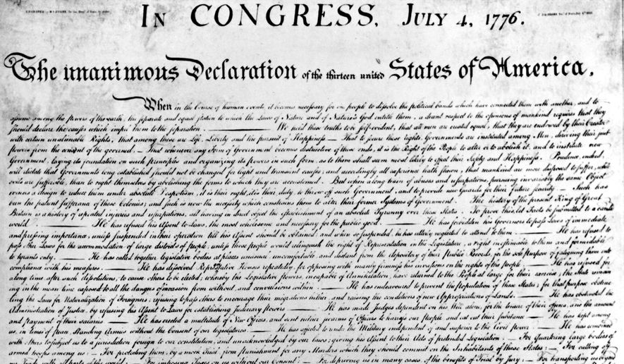
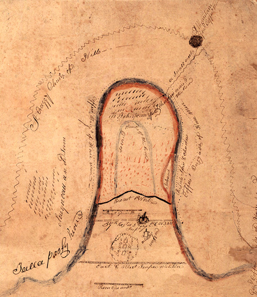
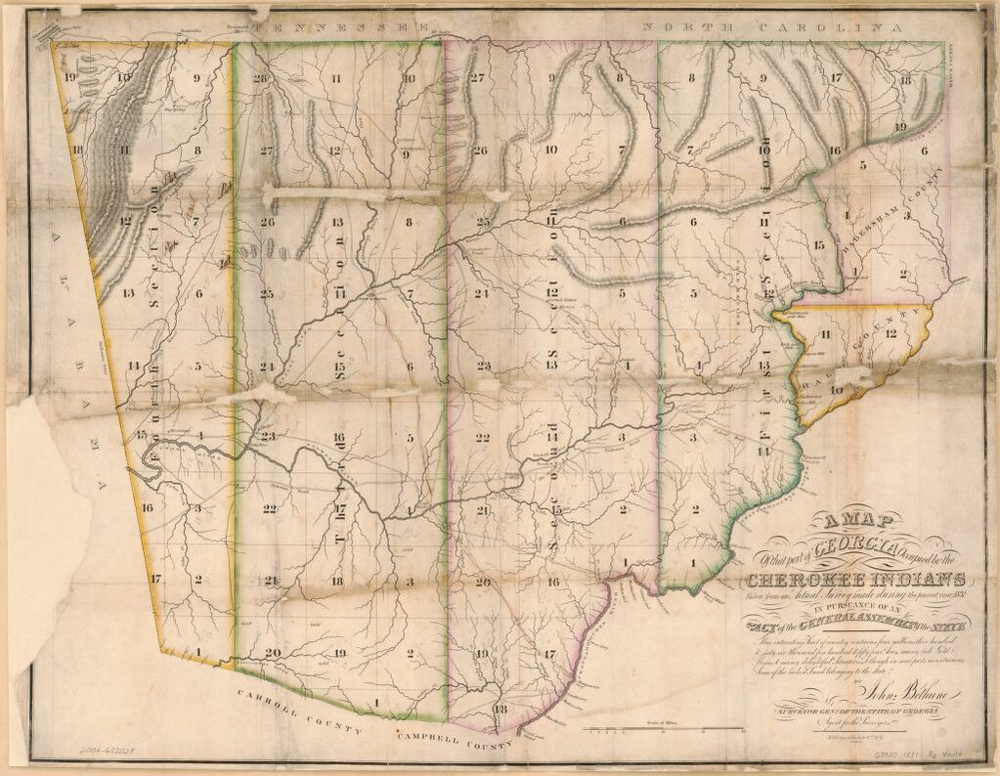
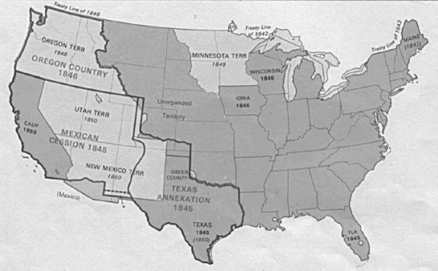
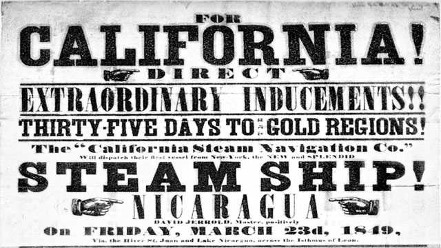
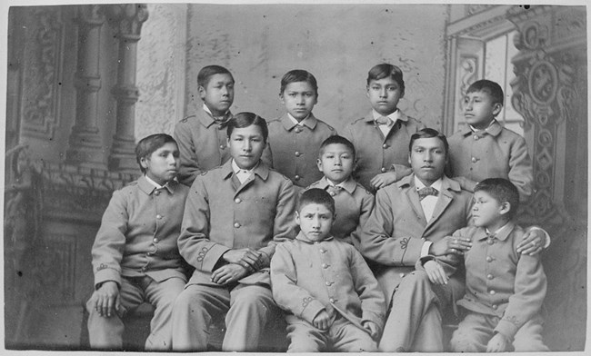
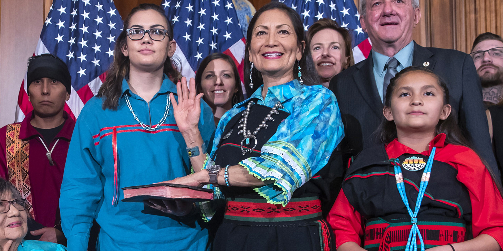

Introduction
“When European settlers arrived at the end of the fifteenth century, they encountered diverse Native American cultures—as many as 900,000 inhabitants with over 300 different languages. These people were virtually destroyed by the subsequent immigration that created the United States. This tragedy is the direct result of treaties, written and broken by foreign governments, of warfare, and of forced assimilation.
Today, people see the policies of the past with 21st century eyes. One might wonder how the nation's indigenous population became 'inferior' cultures in their own land, or how a nation could have committed such atrocities in the name of 'progress'.”
- Library of Congress 2
How to Use this Map
SCROLL to read along as the map changes, or CLICK on the timeline or on a date to see the map in that year.
Know the name of a tribe or nation? SEARCH its name in the box, select as many as you want, and see it on the map. Nothing highlighted? Try moving the timeline!
DOUBLE CLICK on any territory to see a cession document or tribal information.
1776
American Independence

“The Declaration of Independence accused King George III of unleashing 'Merciless Indian Savages' against innocent men, women, and children. The image of ferocious warriors propelled into action by a tyrannical monarch fixed in memory and imagination the Indians' role in the Revolution and justified their subsequent treatment.
Indians fought in the Revolution for Indian liberties and Indian homelands, not for the British empire. But the image of Indian participation presented in the Declaration of Independence prevailed: most Americans believed that Indians had backed monarchy and tyranny. A nation conceived in liberty need feel no remorse about dispossessing and expelling those who had fought against its birth.”
- National Parks Service 3
1787
Northwest Ordinances

New mapping of the Ohio territory, implemented under the Northwest Ordinances - Ohio History Central
“The Northwest Ordinance established a government for the Northwest Territory, area Northwest of the Ohio River, outlined the process for admitting a new state to the Union, and guaranteed that newly created states would be equal to the original thirteen states. Considered one of the most important legislative acts of the Confederation Congress, the Northwest Ordinance also protected civil liberties and outlawed slavery in the new territories.”
- Library of Congress 4
7/2/1791
The Treaty of Holston

{kind=link}
“There were sixteen articles to the treaty of 'perpetual peace and friendship'. The Cherokee acknowledged that they were under the protection of the United States and agreed not to make treaties with any states, individuals, or foreign powers.
The boundary between the Cherokee nation and the United States was redrawn. The United States promised valuable trade goods and a $1,000 annuity to be delivered to the Cherokee to extinguish all Cherokee claims to lands east of the new boundary line, and guaranteed all other Cherokee lands. The Cherokee granted the United States exclusive right to regulate their trade, as well as unmolested use of a road through their territory and navigation of the Tennessee River.”
- Archives.gov 5
7/4/1803
The Louisiana Purchase

“The Louisiana Purchase is a landmark event in American history, one that had a lasting impact not only on the size of the United States, but also on its economic, cultural, and political makeup. Before President Thomas Jefferson's administration purchased the territory in 1803, parts or all of the territory had been under the control of various Native American nations. This purchase opened up the country to Western Expansion by settlers.”
- Library of Congress 6
3/27/1814
Battle of Horseshoe Bend
“Andrew Jackson and an army consisting of Tennessee militia, United States regulars, and Cherokee and Lower Creek allies attacked Chief Menawa and his Upper Creek, or Red Stick, warriors fortified in the Horseshoe Bend of the Tallapoosa River.
Facing overwhelming odds, the Red Sticks fought bravely yet ultimately lost the battle. More than 800 Upper Creek warriors died at Horseshoe Bend defending their homeland. This was the final battle of the Creek War of 1813-14. In treaty signed after the battle, the Creeks ceded more than 21 million acres of land to the United States.”
- Encyclopedia of Alabama 7
2/22/1819
Adams-Onis Treaty

1819 Map of Florida - University of Florida
“General Andrew Jackson seized the Spanish forts at Pensacola and St. Marks in his 1818 authorized raid against Seminoles and escaped slaves who were viewed as a threat to Georgia. Adams defended Jackson, citing the necessity to restrain the Indians and escaped slaves since the Spanish failed to do so. Adams used Jackson’s military action to present Spain with a demand to either control the inhabitants of East Florida or cede it to the United States. Spain ceded East Florida to the United States and renounced all claim to West Florida.”
- History.state.gov 8
5/28/1830
Indian Removal Act and the Trail of Tears
Map of Georgia occupied by Cherokee, surveyed in 1831 - Library of Congress
“The Indian Removal Act was signed into law by President Andrew Jackson on May 28, 1830, authorizing the president to grant unsettled lands west of the Mississippi in exchange for Indian lands within existing state borders. A few tribes went peacefully, but many resisted the relocation policy. During the fall and winter of 1838 and 1839, the Cherokees were forcibly moved west by the United States government. Approximately 4,000 Cherokees died on this forced march, which became known as the Trail of Tears.”
- Library of Congress 9
2/2/1848
Treaty of Guadalupe Hidalgo
Map of land ceded by Mexico - University of Wisconsin
“The Treaty of Guadalupe Hidalgo ended the U.S.-Mexican War. Signed on 2 February 1848, it is the oldest treaty still in force between the United States and Mexico. As a result of the treaty, the United States acquired more than 500,000 square miles of territory.
Since 1848, Native Americans and Mexican Americans have struggled to achieve political and social equality within the United States, often citing the Treaty of Guadalupe Hidalgo as a document that promised civil and property rights. Although the treaty promised U.S. citizenship to former Mexican citizens, the Native Americans in the ceded territories, who in fact were Mexican citizens, were not given full U.S. citizenship until the 1930s.”
- PBS 10
8/14/1848
Oregon Territory

Map of the Oregon Trail - Oregon Encyclopedia
{kind=link}
“In northeastern Oregon, officials acting on behalf of the United States invited Indians to treaty councils, where they were urged to accept treaties and surrender much of their homeland. The government said treaties would prevent bloodshed with white settlers who were eager to resettle Native lands. Under the terms of the treaties, people from many tribes secured for themselves a minute portion of their former estates and lost valuable resources that they considered to be part of their spiritual birthright, including land, fish, game, roots, berries, minerals, timber, and water.”
- Oregon Encyclopedia 11
1848
The Gold Rush
Headline from the Gold Rush - PBS
“For millennia a diverse population of Native American tribes thrived on the abundant lands of California. Before European settlers arrived, an estimated 300,000 native people lived in small villages throughout the area. Contact with the new settlers brought about serious disruptions to the native way of life. The gold rush of 1848 brought still more devastation. Violence, disease and loss overwhelmed the tribes. By 1870, an estimated 30,000 native people remained in the state of California, most on reservations without access to their homelands.”
- PBS 12
1851
Indian Appropriations Act and Reservation Systems

Shosone at Ft. Washakie reservation in Wyoming -National Archives
“As white settlers continued westward and needed more land, Indian territory shrank—but there was no more land for the government to move them to. In 1851, Congress passed the Indian Appropriations Act which created the Indian reservation system and provided funds to move Indian tribes onto farming reservations and hopefully keep them under control. Indians were not allowed to leave the reservations without permission.”
- History Channel 13
1871
No More Treaties

Indian Appropriations Act - National Archives
“In 1871, the House of Representatives added a rider to an appropriations bill ceasing to recognize individual tribes within the United States as independent nations “with whom the United States may contract by treaty.” This act ended the nearly 100-year-old practice of treaty-making between the Federal Government and Native American tribes.”
- National Archives 14
6/25/1876
Battle of Little Bighorn

Sitting Bull - Smithsonian Institution
“Although the Second Treaty of Fort Laramie (1868), in effect, had guaranteed to the Lakota and Dakota (Yankton) Sioux as well as the Arapaho Indians exclusive possession of the Dakota territory west of the Missouri River, white miners in search of gold were settling in lands sacred especially to the Lakota. Unwilling to remove the settlers and unable to persuade the Lakota to sell the territory, the U.S. government issued an order to the Indian agencies that all Indians return to the designated reservations by January 31, 1876, or be deemed hostile.
In defiance of the government’s threats, bands of Lakota and Northern Cheyenne Indians (along with a smaller number of Arapaho) who had refused to be confined by reservation boundaries came together under the leadership of Sitting Bull, a Lakota who called for resistance to U.S. expansion. Sitting Bull and the people behind him won the battle, government troops flooded the area, forcing the Indians to surrender.”
- Encyclopedia Brittanica 15
2/8/1887
Dawes Act

Advertisement for land from the Dawes Act - National Parks Service
{kind=link}
“U.S. law providing for the distribution of Indian reservation land among individual tribesmen, with the aim of creating farmers in the white man’s image. Indian life deteriorated in a manner not anticipated by its sponsors. The social structure of the tribe was weakened; many nomadic Indians were unable to adjust to an agricultural existence; others were swindled out of their property; and life on the reservation came to be characterized by disease, filth, poverty, and despondency. The act also provided that any “surplus” land be made available to whites, who by 1932 had acquired two-thirds of the 138,000,000 acres the Indians had held in 1887.”
- Encyclopedia Brittanica 16
1879-1918
Carlisle Indian School
Students at the Carlisle Indian School - New York Public Library
“In 1879, the United States government undertook a project aimed at assimilating Native American youth into mainstream American culture. Amid dire predictions of the 'extinction' of Native Americans without complete and rapid integration, Civil War veteran Lt. Col. Richard Henry Pratt spearheaded the effort to create an off-reservation boarding school. Pratt instituted a system of forced 'Americanization,' abandonment of Native languages, required conversion to Christianity, and harsh military discipline, and headed north to create the Carlisle Indian Industrial School.”
- Carlisle Indian School Project 17
Today
Issues Facing Native Americans in the 21st Century
Deb Haaland, one of two Native American Congresswomen, being sworn into office in 2019 - Today Show
{kind=link}
Approximately 97% of originally held Native American land in the contiguous United States has been ceded to or forcefully taken by an outside entity.
Today, Native Americans in the United States, living on and off reservations, face a number of unique issues. To learn more, visit the Indian Law Resource Center.
About Our Project
Acknowledgements
We would like to thank Professor Robert E. Roth for all of his extensive feedback he gave throughout or design process.
In addition, a huge thanks to our patient and brilliant teaching assistant, Yuying Chen, for all of the programming help she gave us. Console logs can only do so much.
Lastly, we thank Professor Bill Gartner for his ethical guidance on our project.
Sources
- National Humanities Center (2009). The Taking of Indian Lands, views of colonists, Indians, and the king; selections, 1707-1764
- Library of Congress (2019). Destroying the Native American Cultures
- Galloway (2008). Stories from the Revolution National Parks Service
- Library of Congress (2019). Northwest Ordinance
- National Archives (2018). Proclamation on the Treaty of Holston, 11 November 1791. Founders Online
- Library of Congress (2019). Louisiana Purchase
- Jensen, O. (2017). Battle of Horseshoe Bend Encyclopedia of Alabama
- Nicholson, N. (2016). Convention of 1818 The Canadian Encyclopedia
- Office of the Historian (2019). Acquisition of Florida: Treaty of Adams-Onis (1819) and Transcontinental Treaty (1821) Bureau of Public Affairs
- Library of Congress (2019). Indian Removal Act: Primary Documents in American History
- Oregon Historical Society (2019). Native American Treaties, Northeastern Oregon The Oregon Encyclopedia
- Griswold, R. (2006). War's End Public Broadcasting Service
- Am Experience (2019). The Gold Rush Impact on Native Tribes Public Broadcasting Service
- History.com Editors (2019). Indian Reservation A&E Television Networks, LLC.
- Urwin, G. (2019). Battle of Little Bighorn Encyclopaedia Britannica
- Augustyn, A, et al. (2019). Dawes General Allotment Act Encyclopaedia Britannica
- Institutional History (2019). Carlisle Indian School Project
- Cover Photo Courtesy of Edward S. Curtis (2013). Six Navajo on horseback, ca. 1904 Library of Congress
Our Team
- Joe Marks is a Masters Student at University of Wisconsin-Madison with an undergraduate background in Computer Science
- Catherine McSorley is a graduating senior in Mathematics & Statistics who will be pursuing a Masters Degree in Analytics at North Carolina State University
- Timothy Prestby is an undergraduate senior majoring in Honors Cartography and GIS with an Environmental Studies Minor. Tim plans to pursue a Master's Degree in Cartography upon graduation.